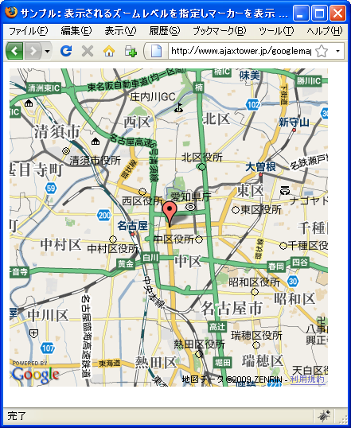
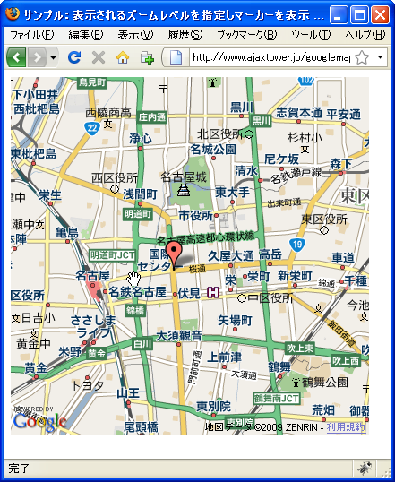
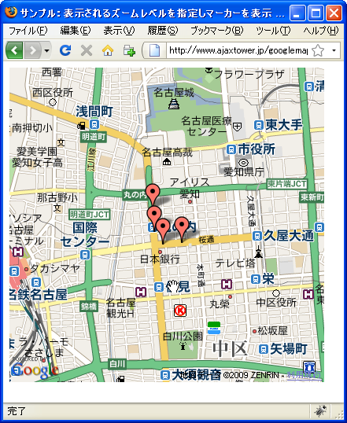
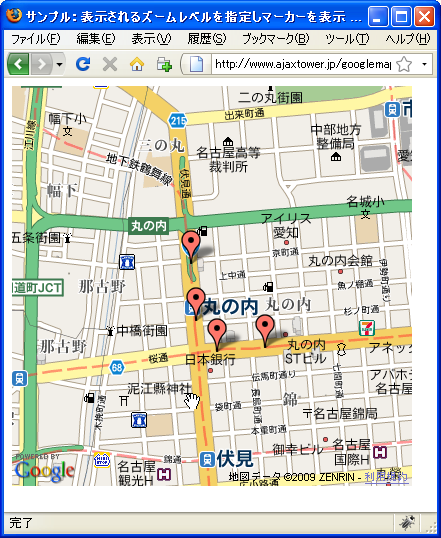
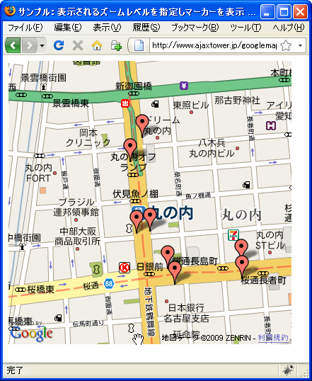

表示�れるズームレベルを指定��ーカーを表示
GMarkerManagerを利用�る�������GMarkerManagerクラス�オブジェクトを作����。コンストラクタ関数�次�よ��定義�れ����。
GMarkerManager(map:GMap, opts?:GMarkerManagerOptions)
指定�れ�地図��ーカー�表示を制御�る新���ーカー ��ージャを作� ���。
引数��対象��るGMap2クラス�オブジェクトを指定���。
実際��次�よ��記述���。
var map = new GMap2(document.getElementById("map"));
map.setCenter(new GLatLng(35.172304,136.908306), 15);
var manager = new GMarkerManager(map);
次ã�«GMarkerManagerクラスã�®ã‚ªãƒ–ジェクトを使ã�„ãƒ�ãƒ¼ã‚«ãƒ¼ã‚’è¿½åŠ ã�—ã�¦ã�„ã��ã�¾ã�™ã€‚通常ã�¯addOverlayメソッドを使ã�£ã�¦ãƒ�ãƒ¼ã‚«ãƒ¼ã‚’è¿½åŠ ã�—ã�¦ã�„ã�¾ã�—ã�Ÿã�Œã€�代ã‚�ã‚Šã�«GMarkerManagerクラスã�§ç”¨æ„�ã�•ã‚Œã�¦ã�„ã‚‹addMarkerメソッドを使ã�£ã�¦ãƒ�ãƒ¼ã‚«ãƒ¼ã‚’è¿½åŠ ã�—ã�¾ã�™ã€‚
addMarker(marker:GMarker, minZoom:Number, maxZoom?:Number)
ã�“ã�®ãƒ�ãƒ�ージャã�«ã‚ˆã�£ã�¦åˆ¶å¾¡ã�•ã‚Œã‚‹ãƒ�ーカーã�®ã‚³ãƒ¬ã‚¯ã‚·ãƒ§ãƒ³ã�«ãƒ�ーカーを 1 ã�¤ è¿½åŠ ã�—ã�¾ã�™ã€‚ãƒ�ーカーã�®å ´æ‰€ã�Œåœ°å›³ã�®ç�¾åœ¨ã�®ãƒ“ューãƒ�ート内ã�§ã€�地図ã�®ã‚ºãƒ¼ãƒ レベルã�ŒæŒ‡å®šã�•ã‚Œã�Ÿã‚ºãƒ¼ãƒ レベル範囲内ã�§ã�‚ã‚Œã�°ã€�ãƒ�ーカーã�¯ç›´ã�¡ã�«åœ°å›³ã�«è¿½ åŠ ã�•ã‚Œã�¾ã�™ã€‚addMarkers メソッドã�¨å�Œæ§˜ã�«ã€�minZoom ã�Šã‚ˆã�³ã‚ªãƒ—ションã�® maxZoom パラメータã�¯ãƒ�ーカーã�Œè¡¨ç¤ºã�•ã‚Œã‚‹ã‚ºãƒ¼ãƒ レベルã�®ç¯„囲を指定ã�—ã�¾ã�™ã€‚
1番目ã�®å¼•æ•°ã�«GMarkerクラスã�®ã‚ªãƒ–ジェクトを指定ã�—ã�¾ã�™ã€‚ã��ã�—ã�¦2番目ã�®å¼•æ•°ã�«æŒ‡å®šã�—ã�Ÿã‚ºãƒ¼ãƒ レベルã�¨å�Œã�˜ã�‹ã��れよりも大ã��ã�„å ´å�ˆã�«ãƒ�ーカーã�¯è¡¨ç¤ºã�•ã‚Œã�¾ã�™ã€‚例ã�ˆã�°2番目ã�®å¼•æ•°ã�«15を指定ã�™ã‚Œã�°ã€�ズームレベルã�Œ15以上ã�®å ´å�ˆã�«ã� ã�‘ãƒ�ーカーã�Œè¡¨ç¤ºã�•ã‚Œã�¾ã�™ã€‚
ã�¾ã�Ÿçœ�ç•¥å�¯èƒ½ã�ª3番目ã�®å¼•æ•°ã‚’指定ã�—ã�Ÿå ´å�ˆã€�ズームレベルã�ŒæŒ‡å®šã�—ã�Ÿå€¤ã‚ˆã‚Šã‚‚大ã��ã��ã�ªã�£ã�Ÿæ™‚ã�«ãƒ�ーカーã�¯å‰Šé™¤ã�•ã‚Œã�¾ã�™ã€‚
実際��次�よ��記述���。
var map = new GMap2(document.getElementById("map"));
map.setCenter(new GLatLng(35.172304,136.908306), 15);
var manager = new GMarkerManager(map);
var marker = new GMarker(new GLatLng(35.172304,136.908306));
manager.addMarker(marker, 15);
サンプルプãƒã‚°ãƒ©ãƒ
��試�����。
function initialize() {
if (GBrowserIsCompatible()) {
var map = new GMap2(document.getElementById("map_canvas"));
map.setCenter(new GLatLng(35.172999,136.897057), 12);
var manager = new GMarkerManager(map);
var marker1_1 = new GMarker(new GLatLng(35.176468,136.896866));
var marker1_2 = new GMarker(new GLatLng(35.174153,136.8970979));
var marker1_3 = new GMarker(new GLatLng(35.173234,136.89762));
var marker1_4 = new GMarker(new GLatLng(35.173383,136.89987));
var marker1_5 = new GMarker(new GLatLng(35.172986,136.899894));
var marker1_6 = new GMarker(new GLatLng(35.172848,136.897845));
var marker1_7 = new GMarker(new GLatLng(35.174106,136.896676));
var marker1_8 = new GMarker(new GLatLng(35.175878,136.896483));
var marker2_1 = new GMarker(new GLatLng(35.17613,136.89667));
var marker2_2 = new GMarker(new GLatLng(35.174131,136.896885));
var marker2_3 = new GMarker(new GLatLng(35.173034,136.897818));
var marker2_4 = new GMarker(new GLatLng(35.173192,136.899881));
var marker3_1 = new GMarker(new GLatLng(35.172999,136.897057));
manager.addMarker(marker1_1, 16);
manager.addMarker(marker1_2, 16);
manager.addMarker(marker1_3, 16);
manager.addMarker(marker1_4, 16);
manager.addMarker(marker1_5, 16);
manager.addMarker(marker1_6, 16);
manager.addMarker(marker1_7, 16);
manager.addMarker(marker1_8, 16);
manager.addMarker(marker2_1, 14, 15);
manager.addMarker(marker2_2, 14, 15);
manager.addMarker(marker2_3, 14, 15);
manager.addMarker(marker2_4, 14, 15);
manager.addMarker(marker3_1, 0, 13);
}
}
<!DOCTYPE html "-//W3C//DTD XHTML 1.0 Strict//EN"
"http://www.w3.org/TR/xhtml1/DTD/xhtml1-strict.dtd">
<html xmlns="http://www.w3.org/1999/xhtml">
<head>
<meta http-equiv="content-type" content="text/html; charset=UTF-8"/>
<title>サンプル：表示�れるズームレベルを指定��ーカーを表示</title>
<script src="http://maps.google.com/maps?file=api&v=2&key=(key)&sensor=false"
type="text/javascript" charset="utf-8"></script>
<script src="./js/code1_1.js" type="text/javascript"></script>
</head>
<body onload="initialize()" onunload="GUnload()">
<div id="map_canvas" style="width: 400px; height: 400px"></div>
</body>
</html>
��ブラウザ�上記�URLを見����。

地下鉄ã�®é§…ã�®ä½�ç½®ã�«ãƒ�ーカーを表示ã�—ã�¦ã�„ã�¾ã�™ã€‚ã�“ã�®ã‚ºãƒ¼ãƒ レベルã�§ã�¯ãƒ�ーカーã�Œ1ã�¤ã� ã�‘表示ã�•ã‚Œã�¦ã�„ã�¾ã�™ã€‚広域地図ã�Œè¡¨ç¤ºã�•ã‚Œã�¦ã�„ã‚‹ã�¨ã��ã�¯ã€�地点を代表ã�™ã‚‹ãƒ�ーカーを一ã�¤ã� ã�‘表示ã�™ã‚‹ã‚ˆã�†ã�«ã�—ã�¦ã�„ã‚‹ã�Ÿã‚�ã�§ã�™ã€‚
��ズームレベルを2�上�����。


��ズームレベル��る�地下鉄�駅�出�付近�4���ーカーを表示������。
��ズームレベルを2�上�����。


��ズームレベル��る�地下鉄�駅�出��一�一���ーカーを表示������。
��よ��表示�れ��るズームレベル��表示�れる�ーカーを管��る�������。
( Written by Tatsuo Ikura )

著者 / TATSUO IKURA
åˆ�心者ï½�ä¸ç´šè€…ã�®æ–¹ã‚’対象ã�¨ã�—ã�Ÿãƒ—ãƒã‚°ãƒ©ãƒŸãƒ³ã‚°æ–¹æ³•ã‚„開発環境ã�®æ§‹ç¯‰ã�®è§£èª¬ã‚’è¡Œã�†ã‚µã‚¤ãƒˆã�®é�‹å–¶ã‚’è¡Œã�£ã�¦ã�„ã�¾ã�™ã€‚